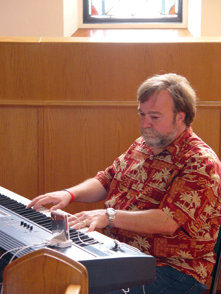

Showers at Willamette University, a five-hour bus ride to Ashland, free time, a great salad with a million "mix-ins" for dinner, and then secret pal revealing!
August 6th Route.
Happy Birthday Annemarie!!!
Some of the audience at last night's program (about the five languages of love), run by Jomary and Diana

After the program, Dirk started playing the piano and ...
gathered a few singers ...
When Dirk stopped playing, Scott took over.
Circle before heading off to Ashland
Chad, the new youth director at the First United Methodist Church of Salem, joined us at circle
CJ is our model today. He has on colored dots (red, signaling "quality time" and green for "physical connection"), he's wearing bracelets given to us at a couple of the churches, and he's holding one of his secret pal gifts.
The daily cheer for Becca - she's laughing!
Mothers and daughters
A kissing line for the birthday girl!
Hearts - this is the third day of writing hearts on the buses.
Waiting to get on the buses after lunch
In Ashland, there was one last chance to catch up on "missed hearts"
And then dinner - watch out for the preparation people!!!
Previous Day's Page
 Back to Main Page
Back to Main Page
 Next Day's Page
Next Day's Page
Questions? Contact Bob Bolles - bolles@ai.sri.com